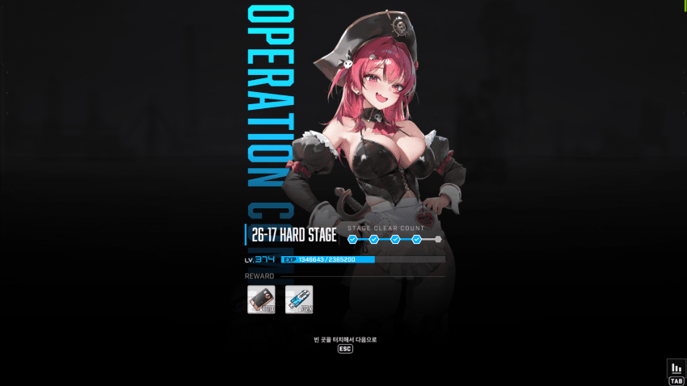
클리어투력 497000
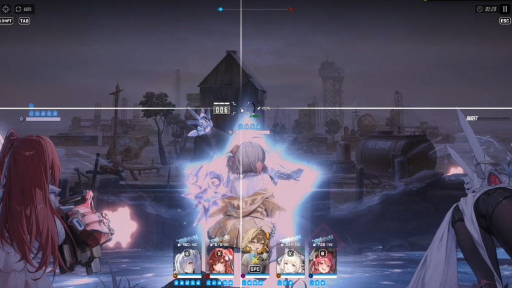
시작하자마자 저기 보이는 집을 때려서 버충을 합니다 바로 아크라
중요한점은 허공에 쓰는거임 바로 잡으면 안됩니다 버스트를 쓰고 허공에 1초정도 총질하다가 오른쪽부터 잡몹을 잡으세요
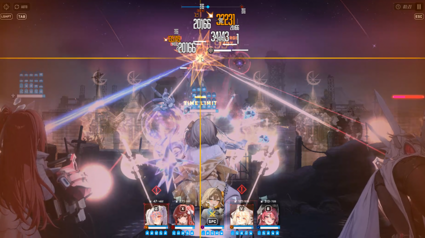
자폭몹 양옆에 두마리 먼저 잡아주고 그 이후 버스트 끝날때까지 촉수몹 점사 버스트 살아있을 때 드럼통 치면 안됨
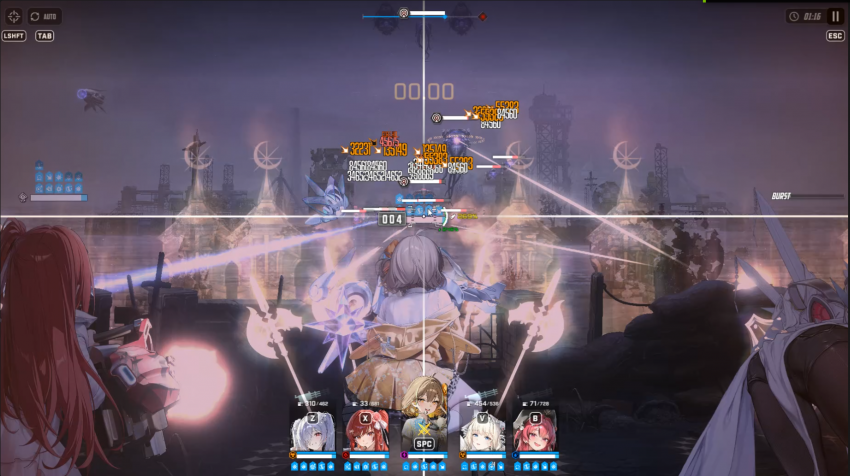
버스트 끝나자마자 드럼통 치세요 그리고 아크렐 광클
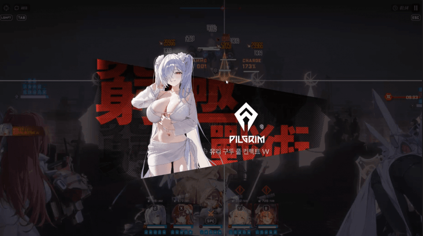
버스트 켜질 때 커서는 첫번째 촉수몹
첫번째 촉수->드럼통->잡몹 잡고 대기 하나 더 있는 촉수 절~~~~대 잡으면 안됨
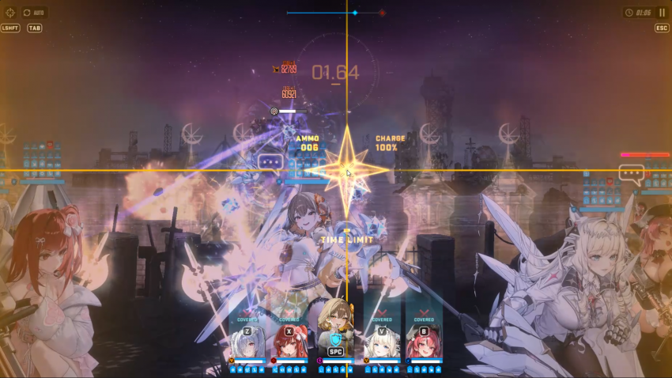
버스트끝날때까지 대기 한방은 맞아도 안죽으니까 신경쓰지말고
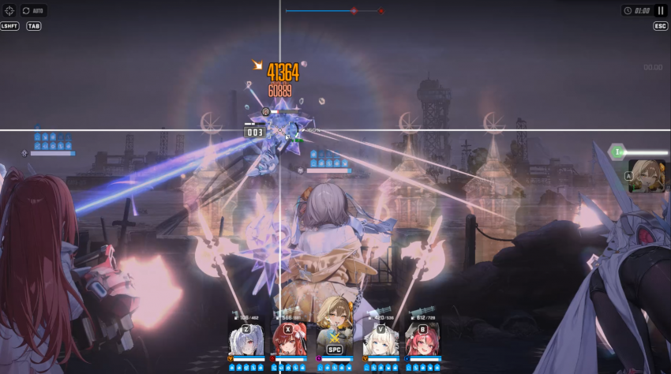
바로 버충후 아메라
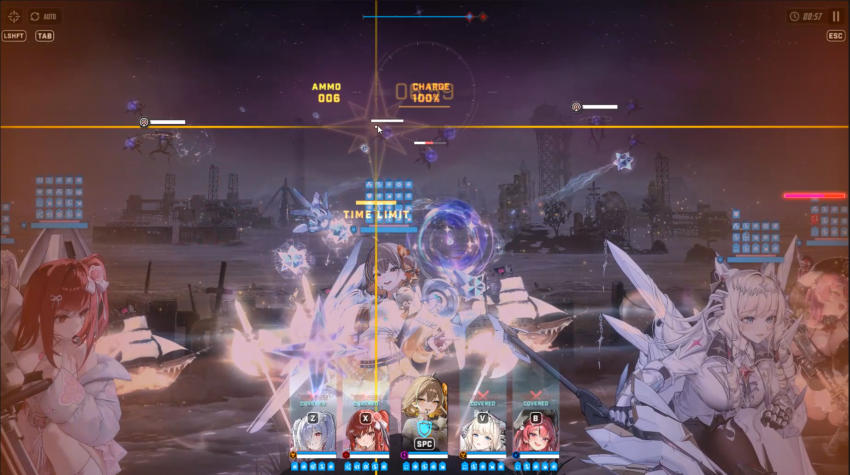
그리고 잠깐 존버 몹이 자리 고정할때까지만 한 0.5초? 안해도 되긴하는데 여기까지왔는데 리트하기 싫으면 걍 하셈
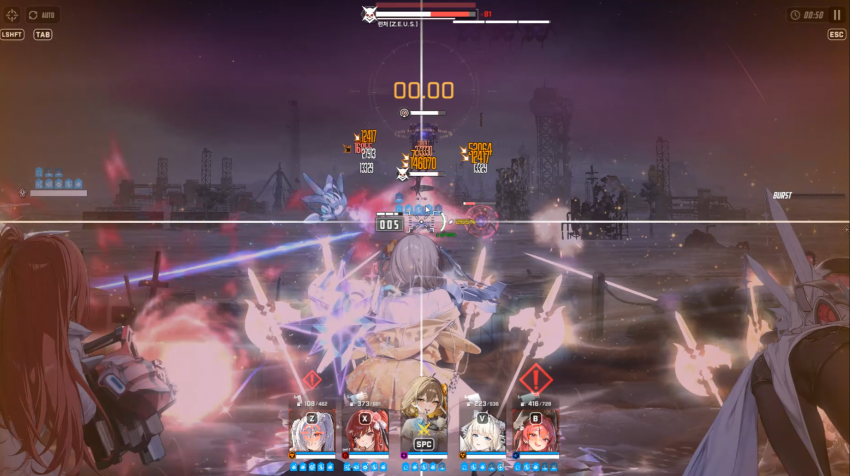
그리고 아까랑 똑같음 버스트 끝날때까지 촉수 때리다가 버충할때 드럼통 패기
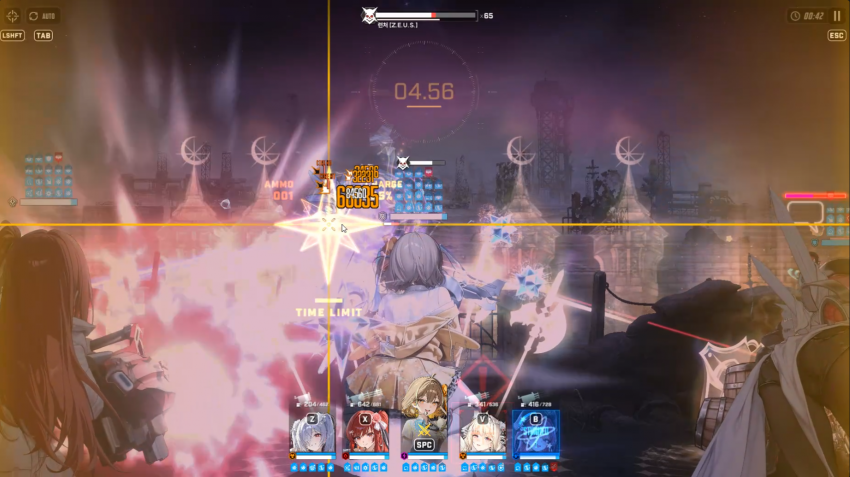
여기서 버스트 켜진다고 신나서 드럼통 치면 리트하는 수가 있음 얌전히 잡몹 다 잡으세요
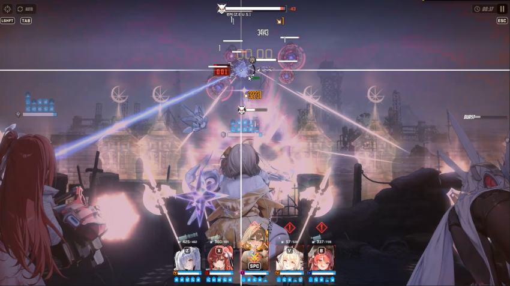
그러면 여기 버충하라고 몹뭉탱이가 나옴
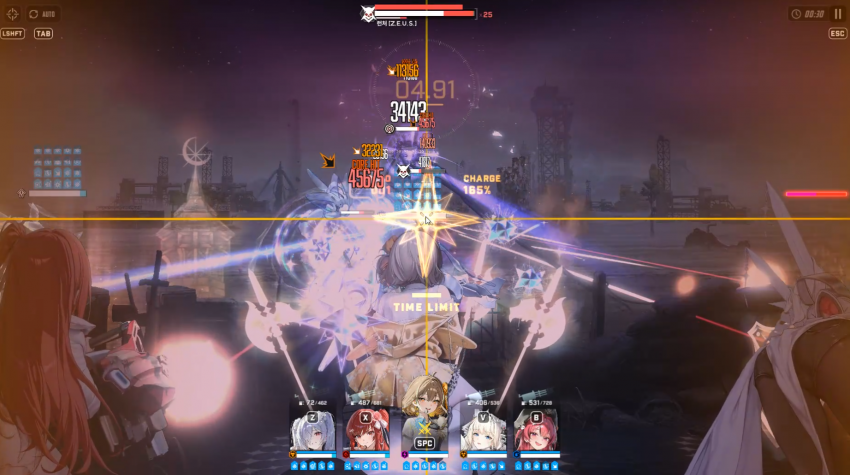
마지막 버스트키고 보스점사하면 됨 메스트쓰면 금방 잡을 수 있지만 자폭몹 때문에 걍 크라운 올리는걸 추천함